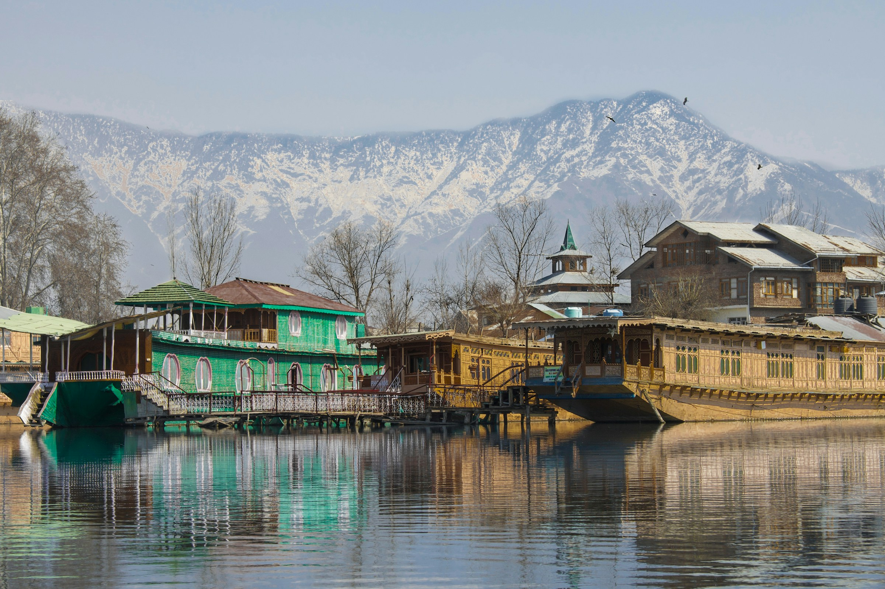
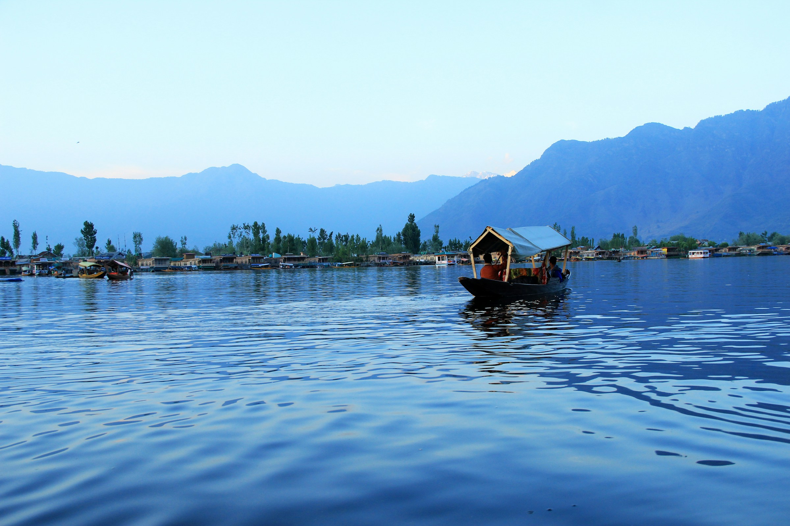
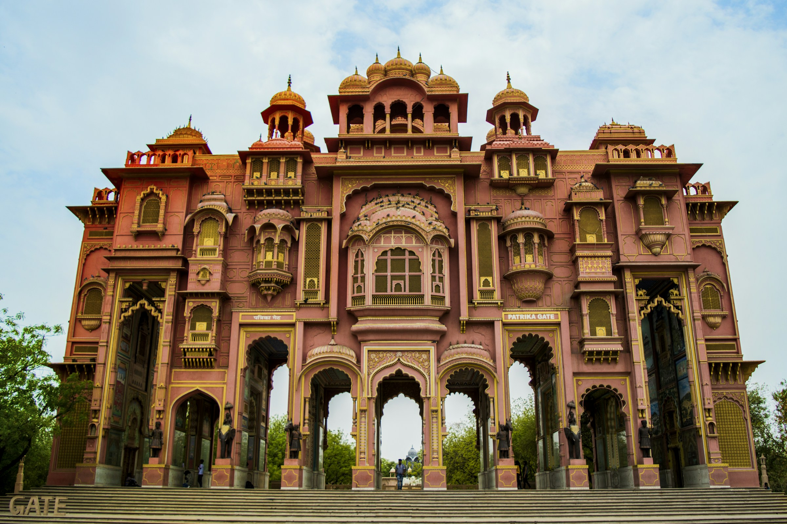
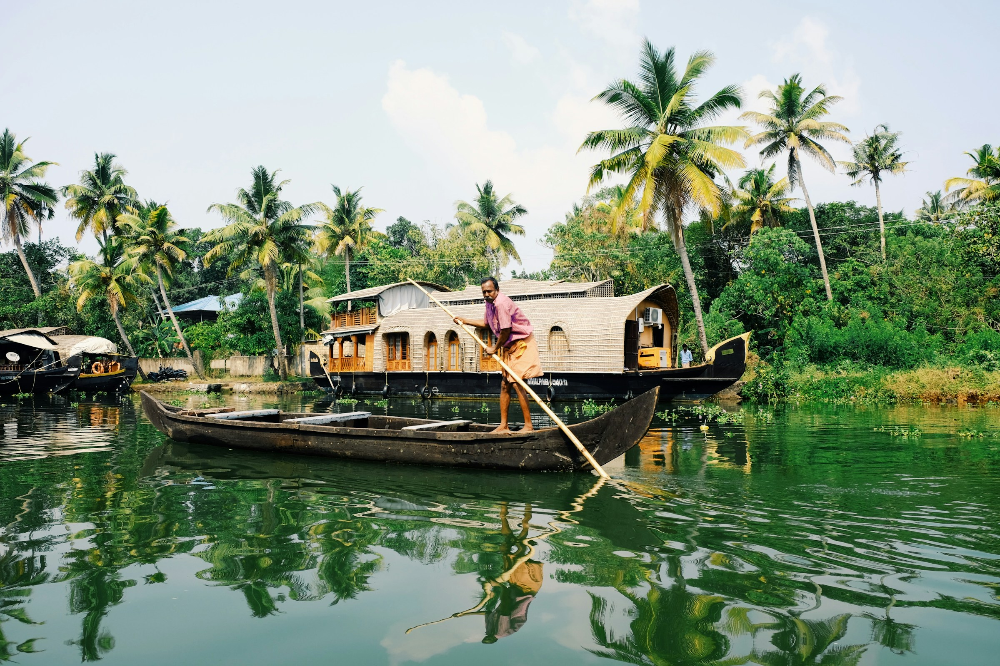
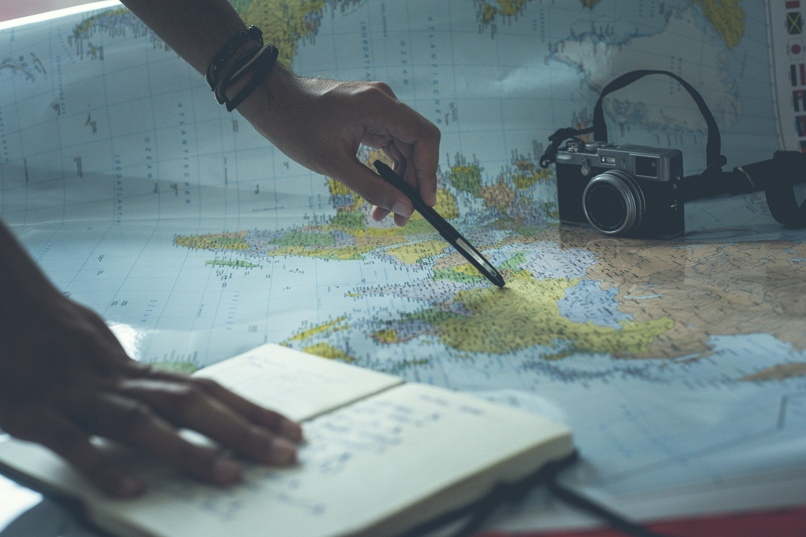
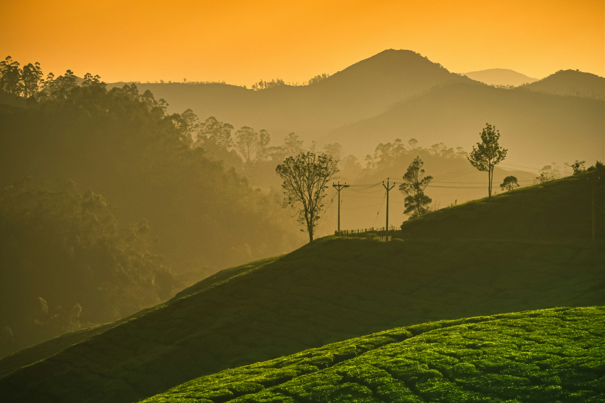
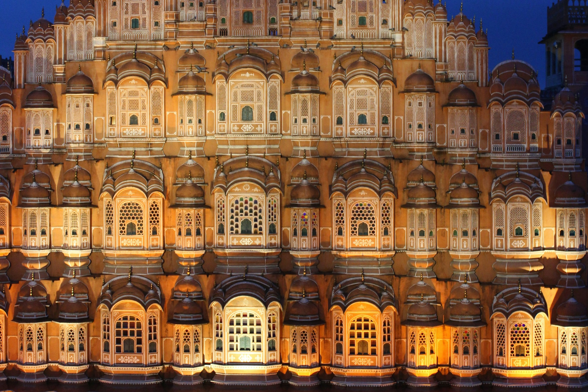
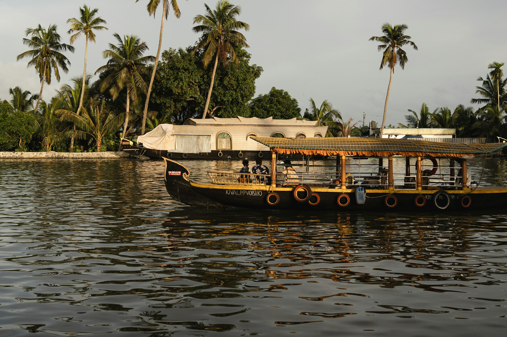

Kashmir, at your pace
Alpine landscapes, quiet mornings and time beside the lake.

Find your own way through places that invite you to pause, look closer and feel more.
Explore places worth slowing down for — and leave space for the moments you didn't plan.

Alpine landscapes, quiet mornings and time beside the lake.



Every good journey starts with listening. Tell us what draws you in, and we can shape a trip around the places and pace that matter to you.
Built around your interests.
Space for discovery.
Guidance from a real conversation.
A plan that can feel like yours.

Some places ask you to begin the day a little earlier.
Explore this journey
Look beyond the landmark and follow the everyday details.
Explore this journey
Tell us where you want to go and how you want to travel. We can help shape the rest.